| [ Previous ] [ Contents ] [ Next ] | Jazz++ Manual |
This chapter of the JAZZ++ manual, describes how to install JAZZ++ itself on the three platforms/OS’ currently supported, and how to setup the MIDI and computer hardware systems for use with JAZZ++. Although most all the various features and functions of JAZZ++ work identically for all supported OS types and computer platforms, there are small inherent differences on how to do things relative to which platform/OS you might be using when it comes to installing and setting up the systems for use with JAZZ++ itself.
If you are new to JAZZ++ and the MIDI domain, you are encouraged to read the following sections to gain some insight about how things work, and how they fit together to complete the final system setup for use in conjunction with the JAZZ++ software MIDI sequencer.
On the other hand, if you’re already conversant with MIDI operations and just want to get on with the installation and setup process, feel free to skip the following descriptive passages and move on to the OS specific instructions that appear later in this chapter.
The term ’MIDI’ is an acronym - it stands for (the) ’Musical Instrument Digital Interface’. It is an industry-standard protocol that enables electronic musical instruments, computers, and other MIDI capable equipment to communicate, control, and synchronize with each other using a common ’language’. The MIDI protocol does not deal with audio data itself, but instead transmits (and receives) MIDI data that..for example...tells the connected MIDI synthesizer what note to play, when to play it, and how to play it. In recent years with the many advances in both electronics and computer technologies, it has been possible to incorporate both MIDI functionality and audio editting facilities into the same MIDI domain, and both dedicated MIDI hardware equipment, and software based MIDI programs like JAZZ++, have audio (sound file) manipulation facilities builtin.
Back when the original Jazz++ was being developed, there weren’t many ’software synthesizer’ programs available for the personal computer, and even if they were available, the then computing hardware was simply too slow to run such software properly. A lot has changed since then and now. Today, even so called ’entry level’ personal computers have more than enough power to run Jazz++ concurrently with one (or more) ’software synthesizers’ running on the same machine, thus making it possible for Jazz++ to become the basis of a fully functional Digital Audio Workstation (DAW) using otherwise standard, low cost personal computer systems and/or other now affordable add-on sound/MIDI hardware options.
If you’re not using a hardware MIDI/synth soundcard or externally connected MIDI synthesizer, you will need an audio capable soundcard to hear anything. Today however, most personal computers already have ’onboard’ audio sound chipsets, so for most people it’s very likely that you already have this requirement satisfied. Likewise, MIDI/synth capable addon soundcards are a -lot- cheaper today than when Jazz++ first started out, and you can buy MIDI/synth soundcards of various types for under 50 dollars these days. One can also buy high-end MIDI/synth soundcards for a few hundred dollars if you’re looking for the very best quality sound ouput, or many otherwise ’professional’ features and specifications such soundcards boast.
If on the other hand you do intend to use JAZZ++ with one or another external MIDI devices/instruments connected to your computer, you will need to install and setup your OS dependant drivers to be able to communicate with whatever computer-to-MIDI interface and equipment you happen to be using. It is common practise today to use the USB computer port to connect such hardware MIDI interfaces, however there are examples that use the serial port, the parallel port, or otherwise come as an addon computer interface card instead. Whatever hardware is used, the OS specific drivers must be installed and configured for use with JAZZ++. Unfortunately, it is beyond the scope of this manual to give JAZZ++ users any specific help with this task, if for no other reason than the JAZZ++ team simply not having hands-on access to every possible MIDI interface type in the world today. This is further recited, in the OS specific sections of the manual appearing in this chapter.
This area of the Jazz++ documentation provides information explaining common concepts of working with MIDI and the personal computer, and details how to get the most out of you personal computer when using it with Jazz++, and also platform/OS specific information regarding setting up and using Jazz++ with the now available computer hardware technologies and various ’software synthesizer’ MIDI programs available to the personal computer user today.
CPU
The original Jazz++ user manual advised -- "For MIDI-only operation a 486 CPU (or equivalent) is sufficient in most cases. For satisfactory audio operation a Pentium CPU with 32 MBytes RAM is recommended." That may well be true for MIDI only operations with no sound of any kind being needed to be produced by the computer hardware. Perhaps we will never know for sure how well Jazz++ ran on such computing powerhouses as the i486 CPU running at a then whopping 100MHz, because most of this hardware is now dead and gone.
Most modern personal computer systems now boast CPU speeds in excess of 1.5 GHz -- even a new low-end ’entry level’ computer system is likely to be running at speeds greater than 2.0GHz. This should be more than enough computing (CPU) power to run and use Jazz++ effectively on a modern personal computing machine, even with softsynths running to produce the actual sound itself.
RAM
As mentioned earlier, Jazz++ itself should not present any significant system load to the personal computer it’s being run on. Likewise, Jazz++ doesn’t need a lot of system RAM to work correctly with modern computer hardwares. The user will however need enough system RAM installed to meet the following requirements for smooth and trouble free Jazz++ sessions ;
1. You will need enough system RAM installed to cover your computer’s system requirements without the system needing to access the hard-disk based ’swap’ (or ’pagefile’) area of RAM whilst using Jazz++. Compared to real ’chip’ RAM, hard-disk based RAM devices are incredibly slow and this can ’bottleneck’ other system operations. More importantly, to access hard-disk based RAM means generating a lot of hardware interrupts at the same time. Doing this is very likely to impact on MIDI playback and record operations in Jazz++ and introduce timing latency issues.
2. If you use soundfonts with MIDI/synth soundcards or softsynths (and you probably will do), you need enough system RAM to hold these soundfile libraries, -above- the system RAM requirements. Soundfont libraries are loaded into RAM, and whilst a lot of soundfont files are small (<1mb), others can be quite large (100+mb), and depending on how many soundfont libraries you intend to use and how big they are, dictates exactly how much RAM you will need here.
It is nearly impossible to correctly and accurately predict just how much CPU speed and system RAM is needed in every individual’s case -- there are just too many variables to consider. To give the reader some idea though, the following are results observed by one of the Jazz++ testing team ;
[ed: add system stats]
*NEW*
The MIDI protocol attempts to be a real time protocol. This is unsurprising -- sound generation and replay (of a song or most all musical compositions) happens in real time, the audience and/or the recording studio hear the performance in real time. If you are a performer on stage using MIDI equipment, that MIDI equipment must be operating as close to real time performance as it possibly can -- when the performer plays a note on a MIDI keyboard, that note event should be heard almost instantaneously not in 5 to 200 milliseconds of time after the event. Likewise, every note event should be acted upon - if the MIDI track is sequenced to produce 8 beats on a kick drum voice, you should hear the synthesizer produce 8 beats of that voice, not 7 beats.
Time (with regards to MIDI) is what we used to measure the actual deviation from ’real’ time that the MIDI response time effectively is. Remember, I stated MIDI *attempts* to be a real time protocol, but in actual practice it very rarely is. There are latencies in various parts of the MIDI chain -- even the physical length of the MIDI patch-cords introduce latency..albeit small..into the interconnected MIDI device chain. The response time of the MIDI instrument receiving a transmitted note event is another place latency can be experienced, and if you are using Jazz++ to trigger another externally connected MIDI device which itself is a sequencer, the timing is even more important to help ensure everything starts, plays, and remains ’in sync’.
The above two paragraphs are things common to the MIDI domain that MIDI users have always had to deal with, regardless of whether or not a PC was being used in the MIDI chain. As a matter of fact, a ’virtual’ MIDI chain involving softsynths and Jazz++ running on a PC, is subject to exactly the same kinds of limitations and latency problems as ’real’ MIDI equipment does...plus one extra layer -- the inherent amount of latency in the operating system and PC hardware being used to ’host’ the virtual MIDI machines and software programs.
When using a PC in this fashion, there are possible latencies in a few different places of the setup overall ; how fast the ’host’ system executes (runs) Jazz++ itself, how fast the generated note events can be delivered to/from the computer’s hardware ports, and/or how fast these same note events can be delivered to and be rendered by a softsynth running concurrently on the same system. Just how powerful your particular hardware is does matter, however there are some common methods and practices that can be employed to better tailor how your personal computer performs with Jazz++. There are also some platform/OS specific ’tweaks’ that can be employed to help make your platform of choice run better when using Jazz++ with timing critical protocols such as MIDI on the modern day PC.
Running Jazz++ should not impose any significant system load by itself, however it does rely on the operating system to deliver the MIDI data to the intended hardware/virtual ports, and also for delivering software data to the computer’s graphics adapter for GUI updates..ie; track window scrolling.
No matter what PC hardware you are using, most all of this software data has to be processed by (or pass through) the operating system in use, and most modern operating systems allow the software programmers to use so called ’real time’ kernel calls, and direct, immediate access to I/O ports and so forth to the actual computer hardware itself. On some platform/OS types this doesn’t happen automatically, and some users might have change some system configurations to achieve optimum performance when using Jazz++ and MIDI on their personal computing machine.
Soundfonts are data files that both hardware MIDI/synth cards and MIDI softsynths may use to create (or synthesize) the actual sound you hear playing. Soundfont files, typically end in the .sf2 .SF2 extensions, although you may also find .sfArk or .sfpack files, which are normal .sf2 packages compressed with a lossless encoding tool. A multitude of free soundfont packages exist on the internet, most of them quite good however some have decidedly better sound quality than others. There are also soundfont editors available for most platforms supported by Jazz++, which allows the user to create their own custom soundfont library file.
A soundfont itself is a software library file containing both sampled audio data, and synthesizer parameter definitions, along with the table of MIDI data that describes the ’soundbank’ itself. The soundbank presents itself to the user, as a list describing exactly what instruments, voices, or sounds are contained in each soundfont library file. Taking your time to search for ’the right’ soundfont for your use can take a bit of trial and error, but it’s well worth the trouble. On the other hand, you can also buy high quality soundfont libraries from commercial companies, if one needs first quality performance.
Many MIDI/synth soundcards require soundfont files to work, and the softsynth setup described further on in this manual also requires 1 (or more) soundfont files to actually make any pleasing sounds. Although the FLUIDSYNTH package includes it’s own sample soundfont file, the quality is not the best...which you’ll discover, when you download and install your own soundfont files. In the Appendix section of the manual, is a short list of soundfont resources we here at Jazz++ think you should try.
1. Try lowering your desktop resolution and/or bits-per-pixel value. Doing this will also lower the load on your CPU when running Jazz++, and enable things to run closer to real time overall. Try using the lowest possible resolution and screen dimension that you can -comfortably- work with while using Jazz++ at a color depth of 8 bits-per-pixel, and see if that helps real time performance.
2. The ZOOM buttons are your friends! To avoid unnecessary system load when running record/replay sessions with Jazz++, always remember to zoom out so the track window graphics are in complete view with no need to paginate the window scrolling operation. Zoom in again if you want to edit a portion of a track. Having to paginate and scroll the Jazz++ track window, generates hardware interrupts which may impact real time performance.
3. Try to have as few software programs running in the background at the same when using Jazz++ on a computer system. Really serious Jazz++ users will try to have the absolute minimum of other software programs running when using Jazz++, to ensure they get as close to real time performance as is possible using Jazz++ on their personal computer.
4. If you are using other MIDI softwares or MIDI softsynths in conjunction with JAZZ++, if possible (and where applicable), use the relevant user GUI interface to set these ’virtual’ MIDI entities up, but when actually playing or recording MIDI compositions, launch these programs from the commandline instead. Use the ’--quiet’ commandline switch if it’s available. Having to render the GUI interfaces for such MIDI programs...especially when that GUI contains elements such as blinking transport running lights or ’RT’ (real time) meters...steals valuable CPU cycles JAZZ++ (or any softsynth) might have otherwise used for it’s own operations.
For Windows there is an install utility (run {\tt setup.exe}) which mostly automates the installation process.
JAZZ++ supports the windows MIDI / audio driver interface. A driver for your MIDI interface card or sound card must be installed before JAZZ++ can play / record MIDI or audio.
Provided such a MIDI driver is installed in your system, JAZZ++ currently supports 32-bit platforms.
For Linux there is a shell script {\tt install-jazz} in the distribution. You must be logged in as root when running the installation script. As a default JAZZ++ will be installed to {\tt /usr/local/jazz}, this may be changed by editing {\tt install-jazz}. Also you must set the environment variable JAZZ to point the jazz directory by adding the line:
{\tt export JAZZ=/usr/local/home}
to your .profile or .bashrc. Please refer to the file {\tt install.txt} which contains up-to-date instructions.
On startup JAZZ++ looks for its configuration files
[ed: This part, down to my out mark, should probably go]
The device-independent part of JAZZ++ (the sequencer / editor part) is known to run on Linux, Sun-OS4 and Solaris2 systems, but should compile and run (with some minor hacking) on any system supporting Linux/X11. To compile you will need the wxWidgets GUI package together with GTK.
The device-dependent part (midi-driver) currently supports:
[ed: and be replaced with something more current...ie; if it still works on Sun-OS4 and Solaris2 systems currently is unknown, USS/lite and voxware..?..and I thought mpu-401 was dinosaured? I’ll get some clarity before I deal with the section above. *MARK* ]
Introduction
Years ago when the Jazz++ project first came to my attention, using it with Linux on the PC was a much different proposition to what is possible today on this platform/OS. Although it would be entirely possible to create a MIDI score with jazz, (in the same way this text is being produced with a text-editor), the whole point of the exercise would be to compose a MIDI score you could actually hear.
Back then with Linux, making sound via MIDI applications meant having MIDI *hardware*. This may have taken the form of a MIDI adapter plugged in the PC’s serial port or soundcard gameport (in MPU-401 mode), with a real world MIDI instrument(s) attached to that, or else a MIDI capable soundcard with a hardware based MIDI sound synthesis chip to make the actual sound. (so called ’MIDI/synth’ capable soundcards) In that latter case, the soundcard necessarily had to be supported by Linux drivers, and in that respect these drivers were more than likely using the now deprecated ’OSS’ sound system modules.
Things have changed. The x86 based hardwares have become faster and cheaper, Linux has grown and matured as an operating system, and likewise Free software has multiplied and proliferated around the world giving rise to the creation of a great many new software applications. Along the way, the venerable ’OSS’ sound system drivers were replaced with the ’Advanced Linux Sound Architecture’ (ALSA) drivers and API.
The result of these many advances and changes over time, means Linux users are no longer constrained by the need of having actual MIDI capable hardware or a MIDI/synth capable soundcard, to obtain good sound production with MIDI applications like Jazz++. Instead of having one or more hardware sound synthesis chips (be they on a soundcard or in a MIDI musical instrument) to produce the sound(s), we can now use a software application to achieve the same ends, and many folks loosely refer to these software applications as being ’softsynths’.
For many years now, users with Windows on their PC have had a distinct advantage over Linux users on the PC, because virtually every sound card (and/or ’onboard’ sound chip) typically ships with proprietary Windows drivers that enable the use of that hardware as a ’softsynth’ in conjunction with the underlying Windows sound API supports. In effect, Windows users could come to the website, download Jazz++ and install it, and be making noise in under 2 minutes with very little or no effort. If only users of other platforms/OS’ could have it this easy - hopefully this documentation will help bridge the gap, when using Jazz++ on this platform with MIDI softsynth implementations.
Command line options (in any order):
Thanks to all the great work done by the ALSA team over the years, Linux now has much better driver supports for the various soundcards on the market today that have hardware based MIDI/synth chips as part of their design.
One of the main benefits of using MIDI/synth based soundcards (and this is true for all platforms), is that it removes the system overhead of having a softsynth running -- the MIDI data output of Jazz++ is sent directly to the hardware MIDI/synth chip on the soundcard, and it takes care of generating the actual sound (and sound data) itself. This allows the kernel to be closer to ’real time’ when using Jazz++, because the system CPU isn’t having to ’play’ the sound, and render that sound, all at the same time. A good analogy, would be to compare all this to the difference it makes to system -graphics- performance, when you add a dedicated 3D graphics-card with it’s own onboard processor unit. Not only are the graphics greatly improved, the system responsiveness is greatly improved as well.
Adding a dedicated MIDI/synth soundcard to your system helps for exactly the same reasons here - it frees up your system CPU so it can do other tasks. In Linux, drivers for more than a few of these types of MIDI/synth soundcards are already available, and are a standard part of the Linux kernel tree. Most Linux distributions include so called ’hardware detection’ softwares, which should automatically discover your MIDI/synth soundcard (if supported), and configure your system’s ALSA drivers accordingly. Sometimes these routines do not detect certain hardware cards correctly (or at all) in some situations, however it is beyond the scope of the Jazz++ manual to help people with problems of this nature.
The correct place to get help with specific ALSA / soundcard related problems, can be found by visiting the ALSA website at ;
\htmlonly{\urlref{http://www.alsa-project.org/}{http://www.alsa-project.org/}} \latexonly{http://www.alsa-project.org/}
The latest list of ALSA supported MIDI/synth soundcards, is always available inside the current alsa-driver source tarball available from the above website. Once you unpack that archive, read the file ;
alsa-driver-1.0.1x/doc/SOUNDCARDS
There you can see if your MIDI/synth soundcard is currently supported under ALSA and Linux. Some MIDI/synth soundcards require firmware being loaded before the card will work - most all of these kinds of soundcards require some kind of helper application called a ’loader’ to copy various instrument files and data (for example ’soundfont’ files) into the working RAM of the MIDI/synth chip. Documentation regarding these things and help with configuring ALSA itself can be found in the same alsa-driver archive ;
alsa-driver-1.0.1x/alsa-kernel/Documentation/
Another good repository of current knowledge regarding Linux sound drivers overall (not just the ALSA sound drivers) can be found at ;
\htmlonly{\urlref{http://linux-sound.org/drivers.html}{http://linux-sound.org/drivers.html}} \latexonly{http://linux-sound.org/drivers.html}
Once you have your MIDI/synth soundcard up and running, it will appear in Jazz++ configuration dialogs just like any other MIDI device connected to the computer running Jazz++. Using a hardware based MIDI/synth soundcard, is very much like using a software based ’softsynth’ as described below - you still have to decide which soundfonts to use, and which bank to load them into. Hardware or software, they are both MIDI instruments, and share very common ways of getting things done at this level.
This area of the documentation will grow over time. There is a lot that can be documented here now with Linux.
In the early stages of the current Jazz++’s revitalization, developers, users and testers alike of the Jazz++ source code used softsynths. One of the softsynth setups used by the Jazz++ developers and testers in Linux, is as I describe below, which uses JACK, FLUIDSYNTH and QSYNTH. A similar setup should also work on the Mac running Mac OSX.
Essentially, -any- ALSA based, MIDI capable softsynth setup should work with Jazz++ in Linux. I’ve already tested a few that seem to work fine. However, it is useful to know how to setup the same softsynth kit that the Jazz++ developers use for testing and improving the Jazz++ code itself, and this is why documentation of this softsynth setup comes first.
Abstract:
Softsynth setups in Linux are comprised of a number of software applications which work together to form a virtual machine that emulates hardware based MIDI/synth devices. The so formed virtual machine can be easily broken down into it’s individual parts, to better understand how the components ’expose’ themselves to the user ;
Additionally, the QJACKCTL software provides a GUI visualization of the virtual MIDI/audio patch-bays formed by the JACK part, allowing the user a quick and easy way to ’hook it all up’ as it were, in any particular configuration they desire.
For the sake of accuracy with this overview, it is worth noting that Jazz++ itself is a virtual machine - it is a software emulation of -hardware- based MIDI sequencers that were in common use years ago, so called ’step sequencers’. Jazz++ is of course much more capable than these old hardware sequencers I speak of, and more closely resembles a modern day Digital Audio Workstation. In their day, old MIDI sequencers were little more than ’drum machines’ triggering sound events on a MIDI or otherwise connected ’tip-and -ring patch cord configured’ analogue synthesizer.
Also note here, the virtual machine softsynth described in the overview above, lacks one obvious component - the INPUT part. It is basically a virtual MIDI synthesizer with all the bells, knobs and whistles, but without a keyboard or anything else ’driving’ it. Jazz++ is that part. The MIDI data produced by Jazz++ is that MIDI input data the FLUIDSYNTH part accepts.
Jazz++ can itself accept valid MIDI data from either the virtual and/or ’real world’ MIDI domains. This means, you can connect a real MIDI synthesizer keyboard to Jazz++ as a MIDI data INPUT part, and record notes played on that with Jazz++. Equally, you could connect the same external MIDI keyboard as an INPUT part to FLUIDSYNTH and use the virtual MIDI softsynth to replay the notes you are playing instead of the synthesizer’s own hardware kit. Other combinations are possible as well.
Finally, there are other virtual machines in software that can be used as valid MIDI data INPUT parts here, such as the program VKEYBD, which is a virtual onscreen MIDI keyboard GUI with keys you click on with your mouse -- all these MIDI devices be they virtual machines or not, can interact and interconnect with each other, and thus possibly form very complex MIDI sound production environments that traverse and inter-operate across the software virtual and real hardware MIDI domains.
Practical:
Many people have troubles getting these softsynths installed and working properly on Linux based systems. The Jazz++ developers have also noted, that dependent on just which Linux distribution you use, (and what release version that might be), also dictates just how easy or difficult this process might be to complete.
If you have any problems with the following instructions, please check the documentation Appendix for possible solutions relative to the Linux distribution you might be using.
For some Linux distributions, the whole process can be as straight forward and simple as installing the needed software packages from your Linux distribution’s installation discs and/or on line package repository. Here’s how to do it ;
Step 1. Assuming you have already built/installed Jazz++, startup your Linux distribution’s package manager application, and search for the package names ’qjackctl’ and ’qsynth’. On a Debian 4.0 ’Etch’ linux system, these packages are named ;
qjackctl_0.2.21-1_i386.deb
qsynth_0.2.5-2_i386.deb
You should find similarly named packages in your Linux distribution’s package collection. Install these packages, and if installation completes without error (it should), continue on to the next step.
[ed: if this flunks out?....]
Step 2. You may want to download a soundfont file and have it handy for when we start QSYNTH. Although the FLUIDSYNTH package includes a soundfont library file, it isn’t particularly suited for the replay of the MIDI composition ’jazz.mid’ mentioned below. Check the resources section in the Appendix of this manual for places to download soundfont library files. You will also ultimately need a MIDI file to load into Jazz++ so there’s something to play, or else move on to creating your own MIDI composition, but for the purposes of this Quickstart guide you can use the ’jazz.mid’ file contained in the Jazz++ source distribution. A general purpose GM/GS soundfont library file is probably best suited for replaying the jazz.mid file.
Step 3. The first stage of ’turning your softsynth on’, is to start the JACK sound server using the QJACKCTL frontend GUI you installed in the beginning stages here. Look in your system’s Multimedia or Sound menu areas for the QJACKCTL link and launch the program. If all has gone well this far, QJACKCTL will present you with it’s control GUI but the JACK server itself is not yet started.
\begin{figure} \latexonly{
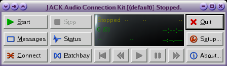
} \htmlonly{\image{0cm;0cm}{images/qjack-stopped.png}} \caption{Main Control GUI of QJACKCTL} \end{figure}Next thing to do, is to click on the ’Start’ button to launch the (background) JACK sound server, and after a moment or two the QJACKCTL control panel GUI should look like this ;
\begin{figure} \latexonly{
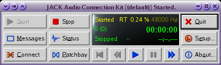
} \htmlonly{\image{0cm;0cm}{images/qjack-running.png}} \caption{Main Control GUI of QJACKCTL} \end{figure}Now click on the ’Connect’ button - this should open the connections panel GUI. Click on the ’MIDI’ connection tab - it should currently look something like this ;
\begin{figure} \latexonly{
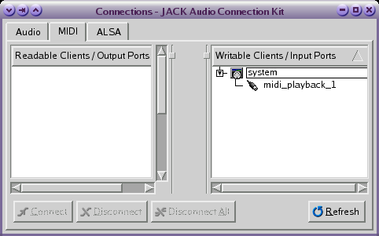
} \htmlonly{\image{0cm;0cm}{images/qjack-connect-win-0.png}} \caption{Connection GUI of QJACKCTL} \end{figure}This all should have completed sucessfully and without generating any errors or warnings. If this is the case, move onto the next step.
If however you have encountered errors or problems here, you will have to fix them first before continuing -- JACK is an essential part of the entire setup, and must be up and running properly before anything else will work here. Look in the FAQ area of the manual Appendix for help with common JACK/QJACKCTL errors and warnings. Once you get it all fixed, come back and continue on here.
Step 4. The next step, is to start the actual synthesizer part itself. In this example we are using the FLUIDSYNTH software synthesizer, which we control and configure using the QSYNTH frontend GUI you installed in the beginning stages here. Look in your system’s Multimedia or Sound menu areas for the QSYNTH link and launch the program. If all has gone well this far, QSYNTH will start and present you with it’s main control GUI but the actual softsynth itself will at this stage be unconfigured.
\begin{figure} \latexonly{
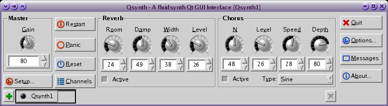
} \htmlonly{\image{0cm;0cm}{images/qsynth-startup.png}} \caption{Main Control GUI of QSYNTH} \end{figure}Next thing to do, is configure the softsynth itself. Click on the ’Setup’ button in the main QSYNTH control GUI -- this will display the QSYNTH configuration GUI. The first tab is the ’MIDI’ setup page ;
\begin{figure} \latexonly{
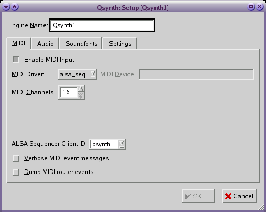
} \htmlonly{\image{0cm;0cm}{images/qsynth-setup-0.png}} \caption{The MIDI Configuration GUI of QSYNTH} \end{figure}Your setup should look something closely akin to the above for using a softsynth on Linux. Once you are happy with the settings, click on the ’Audio’ tab to display the Audio setup page ;
\begin{figure} \latexonly{
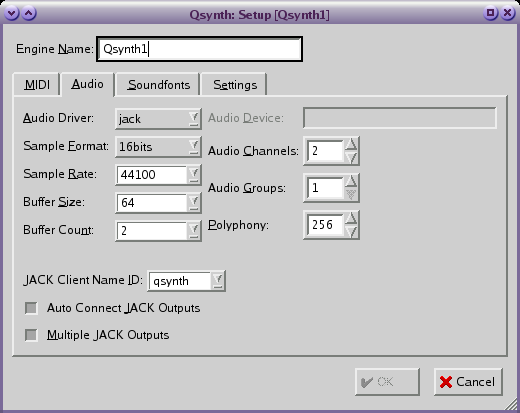
} \htmlonly{\image{0cm;0cm}{images/qsynth-setup-1.png}} \caption{The Audio Configuration GUI of QSYNTH} \end{figure}Your setup should look something closely akin to the above for using a softsynth on Linux using JACK as your audio output driver. This is the most basic setup example - more complex environments are possible. Once you are happy with the settings, click on the ’Soundfonts’ tab to display the Soundfont setup page - it should currently be empty ;
\begin{figure} \latexonly{
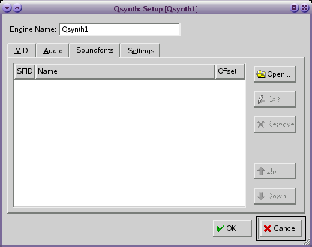
} \htmlonly{\image{0cm;0cm}{images/qsynth-setup-2.png}} \caption{The Soundfont Configuration GUI of QSYNTH} \end{figure}This is a most important part of the softsynth setup - it is here you define exactly what sounds (musical instruments, drum kits, sound FX, synthesizer sound presets, etc, etc) your softsynth will be able to produce, and how you do that is by loading (one or more) soundfont library files into the softsynth itself, using this setup page. Click on the ’Open’ button, and a familiar looking ’open files’ dialog window will appear ;
\begin{figure} \latexonly{
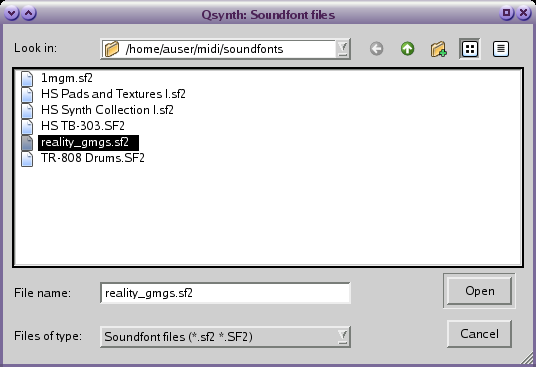
} \htmlonly{\image{0cm;0cm}{images/qsynth-setup-3.png}} \caption{The Soundfont selection GUI of QSYNTH} \end{figure}Navigate to the location of the soundfont file you are going to use. In the example you see above, the username ’auser’ has created a directory ’midi’ in their HOME directory, and a ’soundfonts’ directory under that to keep their *.sf2 soundfont libraries in. Highlight the soundfont file you wish to load, and then click on the ’open’ button This will load the selected soundfont library into the softsynth. Now your Soundfont setup page should show that you’ve sucessfully loaded the soundfont library ;
\begin{figure} \latexonly{
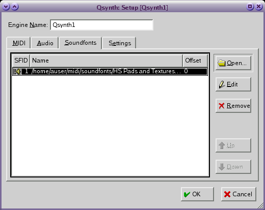
} \htmlonly{\image{0cm;0cm}{images/qsynth-setup-4.png}} \caption{The Soundfont Configuration GUI of QSYNTH} \end{figure}If all has completed sucessfully so far, you’re ready to move onto the final step - starting Jazz++ itself. Before you do, you might want to click on the ’Settings’ tab, to get a quick reference of the current synthesizer settings. Either way, once you are finished here, click on the ’OK’ button and continue onto the next step.
\begin{figure} \latexonly{
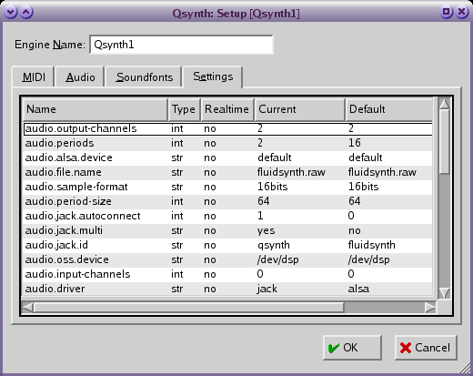
} \htmlonly{\image{0cm;0cm}{images/qsynth-setup-5.png}} \caption{The Settings GUI of QSYNTH} \end{figure}Step 5. Now start Jazz++ itself (the jazz binary). If you have no currently configured MIDI input devices, Jazz++ will skip the MIDI ’input’ dialog window, and proceed directly to displaying the MIDI ’output’ dialog window as exampled below ;
\begin{figure} \latexonly{
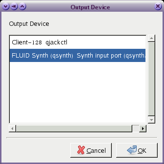
} \htmlonly{\image{0cm;0cm}{images/jazz-output-sel-0.png}} \caption{The Jazz++ MIDI Output Device selection GUI} \end{figure}Highlight the ’FLUID Synth (qsynth)’ entry by clicking on it as in the above example, then click on the ’OK’ button. Jazz++ should now start and present you with it’s main track-window. Before you continue however, you should check everything is ’connected’ properly.
On the QJACKCTL control GUI, click on the ’Connect’ button, and then click on the ’Audio’ tab. Expand the ’qsynth’ and ’system’ entries by clicking on the little arrow to the left of their names. Your current running configuration should appear like the example below ;
\begin{figure} \latexonly{
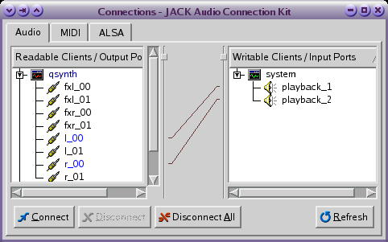
} \htmlonly{\image{0cm;0cm}{images/qjack-connect-win-1.png}} \caption{The Audio Connections GUI of QJACKCTL} \end{figure}Next, click on the MIDI tab in the same window, and ensure Jazz++ is actually connected correctly as in the example below ;
\begin{figure} \latexonly{
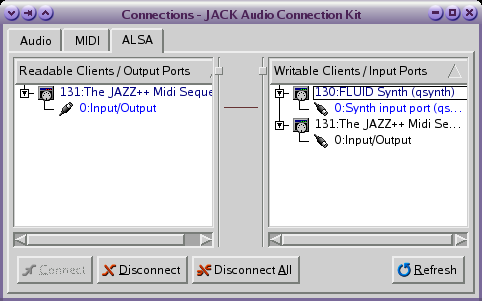
} \htmlonly{\image{0cm;0cm}{images/qjack-connect-win-3.png}} \caption{The MIDI Connections GUI of QJACKCTL} \end{figure}If all appears as exampled, you should be up and running. Load a song.mid file into Jazz++ in the usual way, click on the play button and rejoice!
[ed: more to come here soon...my experience with the above instructions -will- have things running, but whether the soundbank(s) get configured correctly is another matter...still WIP here tho’ ]
Still work in progress, come back soon!!
[ed: help!!........]
| [ Previous ] [ Contents ] [ Next ] |